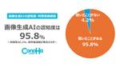

GMO Developers
https://developers.gmo.jp
「GMO Developers」は、GMOインターネットグループが開発者向けの技術情報やイベント情報をお届けするテックブログです。
フィード
CSPヘッダー導入でセキュリティ強化：大中小規模サイトのメリットと注意点を解説 1
1
GMO Developers
CSPの基本 CSPは、ウェブページがどのようなリソースを読み込むことができるかを制御するセキュリティレイヤーです。導入することで主に以下の攻撃を防ぐことができます。 実装はHTTPレスポンスヘッダーで CSPはHTTP […]
9時間前
ETH Tokyo 2024 にトップスポンサーとして協賛決定！
GMO Developers
ETH Tokyo 2024 とは ハッカソン｜2024年8月23日～25日「ETH Tokyo 2024」は、イーサリアム開発者たちが世界中から集う大規模なハッカソンイベントです。2024年8月23日から25日までの3 […]
4日前
ConoHa – ブランド立ち上げからAI活用に至るまで 2
GMO Developers
2012年 – 前身となるサービス この年、私達はConoHaの前身となる「お名前.comレンタルサーバーVPS（KVM）」をリリースしました。何が前身かというと、のちのConoHaでも採用されることとなった […]
5日前
GMOホスコンRevival2024～GMOインターネットグループ、ホスティングサービス開発者がサービスの裏側語ります！～
GMO Developers
イベント概要 こんな方のご参加大歓迎 セッションのアブストラクト ConoHa AI Canvas画像生成AIの裏側 GMOインターネットグループにはインターネットインフラ事業をはじめとして広告・メディア・金融・暗号資産 […]
8日前
お名前.com Webデザインの裏側 ー 構想から軽量化まで 1
GMO Developers
題材：ランディングページ「総額1億円以上かけたリニューアルをまさか隠蔽!?｜お名前.com レンタルサーバー」 ▼実際のページはこちら（別窓） 制作の流れ 案件によって変わりますが、Webデザイナーは主に以下の太字箇所を […]
8日前

「画像生成AIの認知度・利用実態調査」画像生成AI認知度95.8%・利用率46.2%、著作権課題が普及のカギ【ConoHa byGMO調べ】 1
GMO Developers
調査概要 調査結果トピックス 調査結果詳細 １．画像生成AIの認知度は95.8%と非常に高い「画像生成AI」という言葉の認知度について質問したところ、「聞いたことがある」と回答した方が95.8%に達しました。画像生成AI […]
8日前
インフラエンジニアの日常：OpenStack & Kubernetesの運用から技術広報まで 1
GMO Developers
弊社のインフラエンジニアの守備範囲（クラウド・ホスティング系） 一つずつ説明していこうと思います。 Kubernetes 運用管理・検証 まずは、Kubernetes の運用管理があります。基本的に最近のインフラ基盤には […]
10日前
ConoHa VPS の NVIDIA L4 サーバーで Splunk App for Data Science and Deep Learning を使ってみる 1
GMO Developers
ConoHa GPU サーバー ConoHa では、2023年より、NVIDIA の H100 と L4 のサーバーを提供しています。 月単位で利用するとちょっと手が出にくい金額ですが、ConoHa は時間課金で利用でき […]
12日前

レガシーシステムのログ管理：生成AIを利用した課題解決！
GMO Developers
はじめに 私は社内向けの内製システムの開発・保守運用チームでアプリケーションエンジニアをしています。担当するシステムは多岐にわたるのですが、中にはレガシーと呼ばれる古いシステムも存在します。小規模なシステムなのですが、古 […]
16日前
ローカルLLMの性能向上技術 : RAGとファインチューニングの比較ポイント
GMO Developers
ローカルLLMとは まず、「ローカルLLM」について簡単に説明します。ローカルLLMとは、ChatGPT、Gemini、Claudeのような外部のSaaSサービスを介さず、ユーザーや組織が管理する環境で直接動作する大規模 […]
17日前